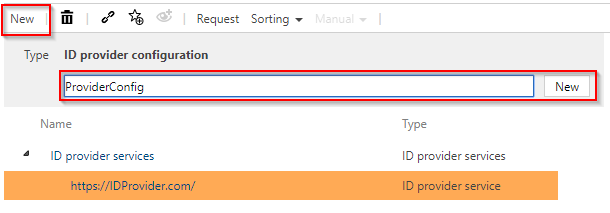
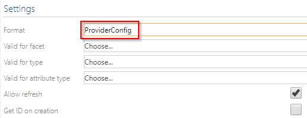
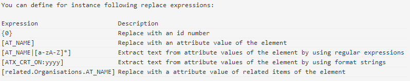
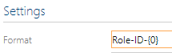
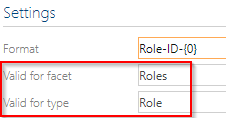
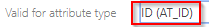
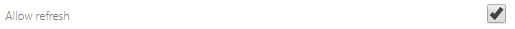

Create ID Provider Configuration
There is a configuration to configure the ID provider, for example, which facets and objects it affects. A configuration is created under the service. Select the service and click on "New" to create the configuration.

If you select this created configuration, you can define in the detail content how this ID should look like and which facets or objects it concerns.
Format

This item describes how the composite unique ID should look like.
In this field you can use various placeholders to create an individual ID. You will find hints and examples below in the detailed content.

To illustrate this, a prefix "Role-ID-" is selected and "{0}" is set behind it.

Thus, for example, this prefix is always used with each newly created ID for a role, followed by an ascending number.
Facet und Type
You can also configure under "Facet" and "Type" for which facet and underlying object this ID should be generated. For example, roles.

Valid for Attribute Type
The field "Valid for Attribute Type" defines for which attribute this ID is entered in a role. In this example, the created ID is to be written to the ID attribute of the object.

It could also be written in the name field or some others. Clicking on the field displays all options.
Allow refresh
Select this option if you want to allow this ID to be updated automatically after changing the connected objects in the ID.

Get ID on Creation
This option should be selected if you want an ID to be assigned automatically when a new object is created.